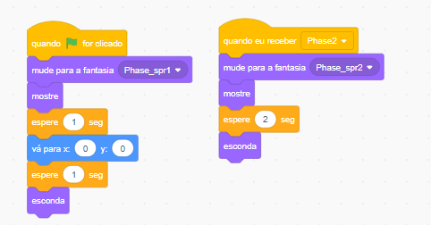
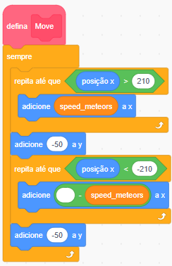
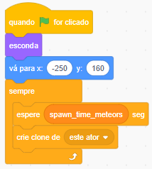

Space Shooter
Scratch

As variáveis são caixinhas onde o computador guarda informações que mudam o tempo todo, como pontos e velocidade.

As variáveis permitem que o jogo "lembre" informações importantes, como a pontuação do jogador. Isso é essencial para criar um jogo dinâmico e interativo.
Além disso, vamos adicionar a pontuação na colisão entre o jogador e os meteoros.
Monitora colisões para encerrar a partida.


No código do Inimigo, vamos substituir a bandeira verde por uma mensagem. Ele só deve entrar no jogo quando receber o sinal da Fase 4!
esconda no bloco da 🚩 Bandeira Verde para o Boss não aparecer antes da hora!
Para deixar o jogo mais difícil conforme o tempo passa, vamos fazer os meteoros acelerarem quando a Fase 2 e a Fase 3 começarem.
Primeiramente, vamos criar as variáveis "Spawn_time_meteors" (tempo de surgimento) e "Speed_meteors" (velocidade de movimento).
Agora, no código dos meteoros, substituímos os números fixos pelas variáveis. Assim, o comportamento do jogo muda automaticamente!


adicione a y e Spawn_time_meteors no bloco espere, você controla a dificuldade do jogo inteiro em um só lugar!
Chegou a hora de testar seus conhecimentos sobre Variáveis e Fases! Complete os desafios abaixo com base no que aprendemos.
Nós aprendemos que variáveis são como "caixinhas" que guardam informações. Qual é a Regra de Ouro que não podemos esquecer na hora de criar a variável Score?
R: Sempre selecionar a opção... _______________________________________________
Observe o script de colisão que fizemos na aula:
Por que usamos o operador OU (bolinha verde) neste código em vez do operador E?
R: __________________________________________________________________
Você é o mestre do jogo! O Boss acabou de entrar na Fase 4 e quer que os meteoros fiquem quase impossíveis de desviar. Complete o código abaixo com valores que deixem o jogo muito difícil: